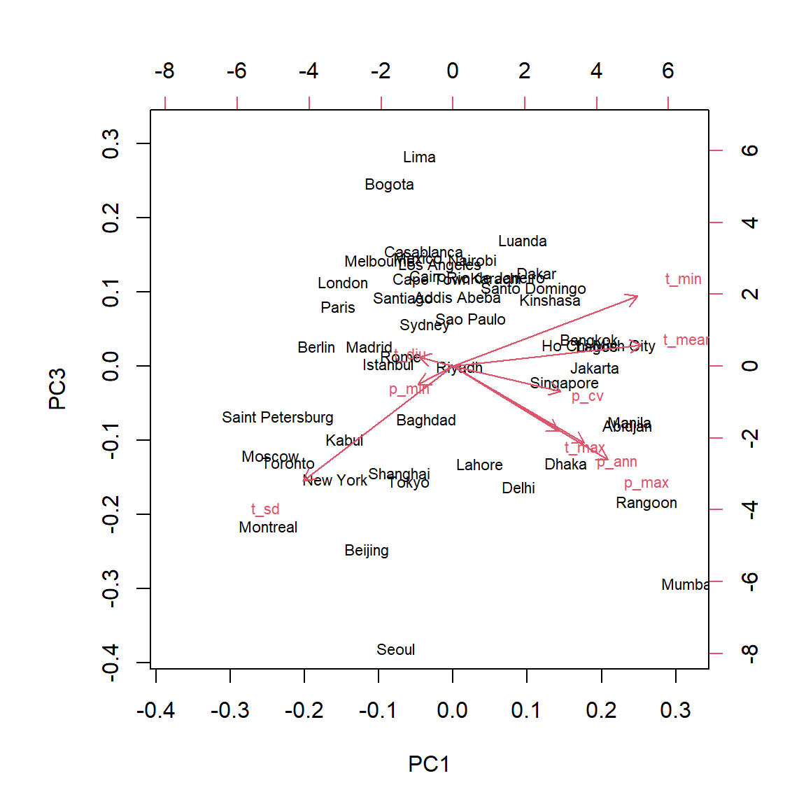
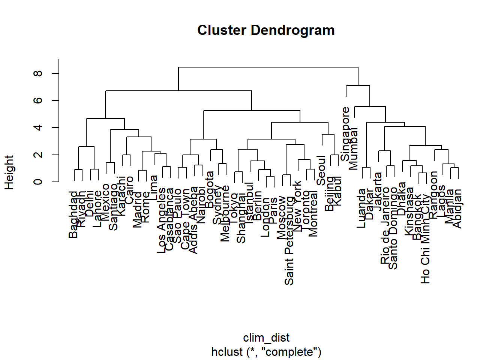
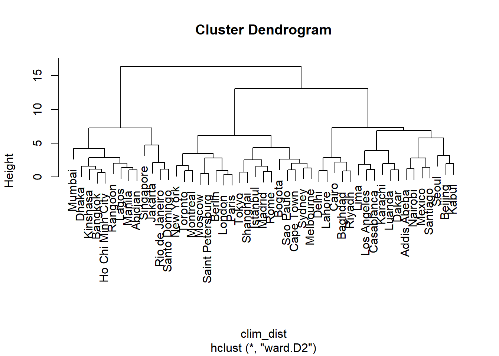
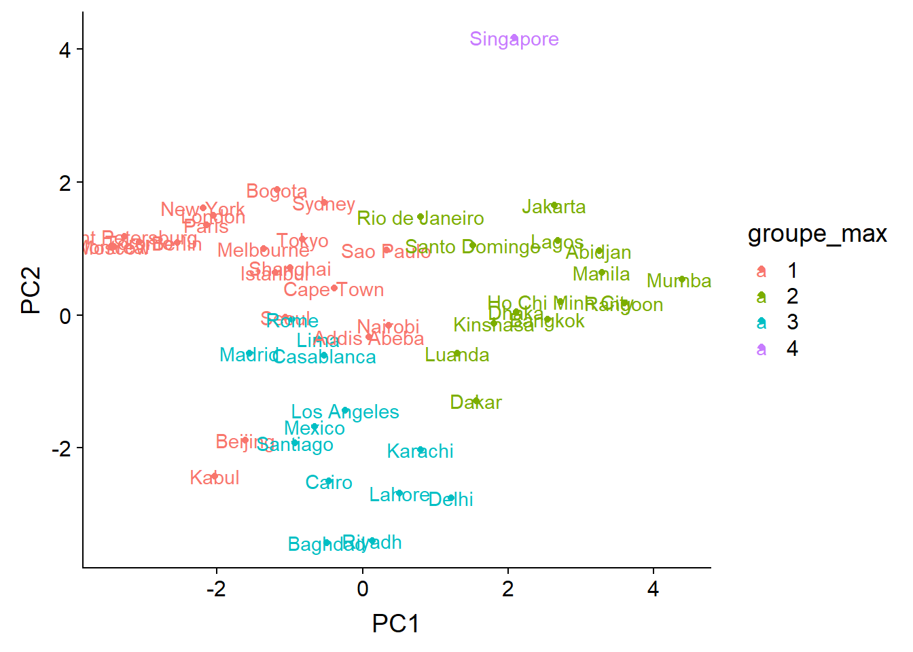

Multivariate analysis, Part 1
December 2, 2019
Objectives
Describe different roles of multivariate analysis techniques.
Describe the usefulness of ordination and clustering methods to reduce the dimensionality of a dataset.
Execute a principal component analysis and be able to interpret the results.
Divide observations into classes using hierarchical clustering methods.
Why multivariate analysis?
Multivariate analysis aims to model the joint distribution of several variables, that is, the variation of individual variables and the correlations between them.
Here are some situations where these methods might be useful:
In the description or exploration of a dataset with many variables, it can be useful to visualize the relationship between variables (e.g. correlations) and between observations (e.g. similarity between study sites) with a single graph.
The response we want to explain is multivariate. For example, the composition of an ecological community is defined as the presence or abundance of several species at different sites. Interactions between species (e.g. competition) make it impossible to study this response as the combination of several independent univariate responses (one species at a time).
We want to explain a univariate response according to a large number of predictors that are partially correlated. For example, the presence of a species depending on climatic conditions, the growth of trees of different species on a site depending on their functional traits, etc. In previous classes on regression, we have seen that it is difficult to estimate the effect of a large number of potentially correlated predictors in the same model. Model selection is also complicated when the number of predictors is large.
Structure of multivariate data
Suppose we make \(n\) observations of \(p\) variables. We represent these observations by a matrix where \(x_ {ij}\) is the value of the variable \(j\) for the observation \(i\):
\[ \begin{bmatrix} x_{11} & x_{12} & ... & x_{1p} \\ x_{21} & x_{22} & ... & x_{2p} \\ ... & ... & ... & ... \\ x_{n1} & ... & ... & x_{np} \end{bmatrix} \]
As an example, let’s consider the cities_climate.csv dataset, which contains climatic data from WorldClim for 49 major cities.
villes <- read.csv("../donnees/cities_climate.csv")
head(villes)## city long lat t_mean t_diu t_sd t_max t_min p_ann p_max p_min
## 1 Tokyo 139.751 35.685 15.6 7.9 7.492 30.7 0.7 1428 185 47
## 2 Shanghai 121.400 31.046 16.2 7.4 8.339 31.6 0.8 1050 167 41
## 3 Mumbai 72.826 18.975 26.8 7.3 1.767 32.7 18.9 2370 827 0
## 4 Karachi 67.082 24.906 25.9 9.9 4.035 34.2 12.0 194 82 0
## 5 Delhi 77.217 28.667 25.1 13.1 6.715 40.5 7.3 734 274 3
## 6 Manila 120.982 14.604 27.3 8.0 1.078 33.8 21.4 2150 466 8
## p_cv
## 1 40
## 2 46
## 3 143
## 4 134
## 5 142
## 6 90Here is the list of climate variables in this data frame:
- t_mean: Mean annual temperature.
- t_diu: Diurnal temperature variation, the mean difference between the maximum and minimum temperature in the same month.
- t_sd: Seasonal temperature variation, standard deviation of mean temperature between months.
- t_max: Maximum temperature of the hottest month.
- t_min: Minimum temperature of the coldest month.
- p_ann: Annual precipitation.
- p_max: Precipitation of the wettest month.
- p_min: Precipitation of the driest month.
- p_cv: Coefficient of variation (standard deviation / mean) of precipitation between months.
All temperatures are in degrees C and all precipitation variables (except coefficient of variation) are in mm.
We will extract the climatic variables in a separate data frame, then add row names to indicate the city names.
climat <- villes[, 4:12]
rownames(climat) <- villes$cityIn a multivariate analysis context, we will treat our 49 observations as “points” in a 9-dimensional space (one dimension for each variable).
Standardization of variables
The ordination and clustering methods we will see in this course are based on the concept of distance between points in this multidimensional space. However, we cannot calculate these distances if the units differ between the variables: for example, we cannot say whether a variation of temperature of a degree C is more or less important than a variation of precipitation of one mm.
For this reason, we begin by standardizing our variables. When applied to a data frame where all variables are numeric, the scale function transforms each variable by subtracting its mean and dividing by its standard deviation.
clim_norm <- scale(climat)
round(head(clim_norm), 2) # Only show two digits after decimal## t_mean t_diu t_sd t_max t_min p_ann p_max p_min p_cv
## Tokyo -0.44 -0.77 0.91 0.07 -0.62 0.66 -0.06 0.78 -0.74
## Shanghai -0.36 -0.96 1.17 0.24 -0.61 0.08 -0.17 0.58 -0.59
## Mumbai 1.17 -1.00 -0.86 0.46 1.14 2.12 3.86 -0.81 1.84
## Karachi 1.04 0.01 -0.16 0.74 0.47 -1.24 -0.69 -0.81 1.62
## Delhi 0.93 1.24 0.67 1.95 0.02 -0.41 0.48 -0.71 1.82
## Manila 1.25 -0.73 -1.07 0.67 1.39 1.78 1.66 -0.54 0.52The result is a matrix where each column has a mean of 0 and a standard deviation of 1. For example, in Tokyo the mean temperature is 0.44 standard deviations below the mean of the 49 cities, whereas the annual precipitation is 0.66 standard deviations above the mean of cities.
Note
You can check that the standard deviation of each column is 1 with the apply function:
apply(clim_norm, 2, sd)## t_mean t_diu t_sd t_max t_min p_ann p_max p_min p_cv
## 1 1 1 1 1 1 1 1 1To understand this command, it is easier to read it backwards. The apply(clim_norm, 2, sd) command says to apply the standard deviation function sd to each column (the number 2 means column, the number 1 means row) of the clim_norm matrix.
There are shortcuts in R to calculate the sum or mean of the rows or columns of a matrix: rowSums, colSums, rowMeans, and colMeans.
Dimensionality reduction
It is not possible to visualize a scatter of points in 9 dimensions. From an exploratory point of view, we would like to be able to reduce the dimensionality of our data while keeping as much information as possible on climate variation between cities. This class aims to provide an introduction to two types of methods for performing this reduction.
Ordination methods perform a transformation of the original \(p\) variables into a smaller number of new variables, so that the representation of the points in the reduced space (often in 2 dimensions) reproduces as closely as possible the distances between the points in the original \(p\)-dimensional space. These methods order observations according to the most important axes of variation, hence their name. Principal component analysis, discussed below, is an example of an ordination method.
If ordination aims to represent the original numeric variables by a reduced number of transformed numeric variables, clustering methods attempt instead to divide the observations into a discrete number of groups (or categories) according to their proximity in the \(p\)-dimensional space. The clustering method we will see in this class is agglomerative hierarchical clustering.
Principal component analysis
Introduction
Here is a scatter plot representing three of the climate variables for the 49 cities: mean temperature, standard deviation of temperature, and annual precipitation.
The position of the points on the screen represents the projection of the 3D scatter of points on a 2D image. By rotating the graph, this projection changes even if the value of the points remains the same for the three variables. Some rotations make it easier to differentiate the points than others, even if none perfectly reproduces the distances between every pair of points. Mathematically, these rotations are a linear transformation of the original variables into a new three-dimensional space composed of the width, the height and the depth of the screen; the variation according to this third dimension (depth) is of course hidden in the visualization.
Consider the extreme case where we have three variables \(x\), \(y\) and \(z\) and one of them is perfectly predicted by the other two (perfect collinearity), for example \(z = 2x - 5y\). The set of points is located on a single plane, but the axes of this plane correspond to a linear combination of the original variables. A rotation would align this plane with the first two dimensions of the visualization (width and height). In this case, since the data do not vary in the third dimension, the projection perfectly represents the variation of the original data.
It is rare for variables to be perfectly collinear, so the dimensionality reduction will always be associated with a loss of information; the goal of ordination is to specifically choose the new axes in order to minimize the variation of the data in the dimensions that will be eliminated, or in an equivalent way, to maximize the variation “explained” by the selected axes.
How principal component analysis works
Consider a multivariate data set \(X\), a matrix of \(n\) observations of \(p\) variables, and assume that these variables have been previously standardized. Principal component analysis (PCA) is a linear transformation of the matrix \(X\) (equivalent to a rotation in \(p\) dimensions) determined as follows:
- the first axis (first new variable) is chosen so as to maximize the variance of the data along this axis;
- the second axis is chosen so as to maximize the variance of the data provided that it is orthogonal (perpendicular) to the first axis;
- the third axis is chosen so as to maximize the variance of the data provided that it is orthogonal to the two previous ones;
- and so on.
The transformed variables, or principal components, obtained by PCA thus have the property of being orthognal to each other (which means in particular that their correlation is 0) and of being listed in descending order of explained variance.
Mathematically, PCA requires the calculation of the eigenvalues and eigenvectors of the covariance matrix of \(X\), \(C_X\). An element of this matrix \(C_{X ~ i,j}\) corresponds to the covariance between the columns (variables) \(i\) and \(j\) of \(X\). The eigenvectors indicate the direction of the principal components whereas the eigenvalues indicate the variance of the data according to each principal component.
The development of PCA is based on the theory of multivariate normal distributions and the method works best when the variables approach normality. In practice, it is enough to transform very asymmetric variables in order to avoid that certain extreme values have an excessive influence on the analysis.
In the next class, we will see ordination methods that are adapted to the species presence-absence and abundance data common in ecology.
PCA with R
There are several functions to perform PCA in R. In this course, we will use the prcomp function.
Note: If we had not standardized the variables beforehand, we can do it directly in the prcomp function with the argument scale. = TRUE.
clim_acp <- prcomp(clim_norm)
summary(clim_acp)## Importance of components:
## PC1 PC2 PC3 PC4 PC5 PC6
## Standard deviation 1.9785 1.5741 0.9774 0.90767 0.75003 0.46655
## Proportion of Variance 0.4349 0.2753 0.1061 0.09154 0.06251 0.02418
## Cumulative Proportion 0.4349 0.7102 0.8164 0.90792 0.97042 0.99461
## PC7 PC8 PC9
## Standard deviation 0.20003 0.08141 0.04355
## Proportion of Variance 0.00445 0.00074 0.00021
## Cumulative Proportion 0.99905 0.99979 1.00000The summary of PCA results first shows the standard deviation of each of the 9 principal components (rotation of the original variables). These values are also stored in the sdev element of the result (clim_acp$sdev). The next two rows indicate first the ratio between the variance of a component and the total variance (sum of the variances of the 9 variables), then the cumulative proportion.
The variances associated with each principal component can be visualized with the screeplot function.
screeplot(clim_acp)
The transformation between the original (standardized) variables and the principal components is given by the rotation element.
round(clim_acp$rotation, 2)## PC1 PC2 PC3 PC4 PC5 PC6 PC7 PC8 PC9
## t_mean 0.47 -0.11 0.11 -0.27 0.19 -0.01 0.08 0.80 0.03
## t_diu -0.09 -0.46 0.05 -0.35 -0.78 0.06 -0.06 0.07 -0.19
## t_sd -0.38 -0.16 -0.58 -0.08 0.30 0.00 -0.01 0.20 -0.60
## t_max 0.27 -0.37 -0.33 -0.51 0.30 0.21 -0.06 -0.41 0.34
## t_min 0.46 0.07 0.36 -0.12 0.13 0.03 -0.18 -0.34 -0.69
## p_ann 0.33 0.37 -0.39 -0.01 -0.29 0.24 0.66 -0.08 -0.11
## p_max 0.39 0.15 -0.48 0.30 -0.25 0.00 -0.66 0.08 0.06
## p_min -0.09 0.49 -0.09 -0.57 -0.08 -0.63 -0.10 -0.04 0.04
## p_cv 0.27 -0.45 -0.13 0.33 0.00 -0.71 0.29 -0.14 -0.02For example, the first column of this matrix tells us that the first principal component is calculated by the equation:
\[ PC1 = 0.47 T_{mean} - 0.09 T_{diu} - 0.38 T_{sd} + 0.27 T_{max} + 0.46 T_{min} + 0.33 P_{ann} + 0.39 P_{max} - 0.09 P_{min} + 0.27 P_{cv} \]
Since the variables have been standardized beforehand, the magnitude of these coefficients indicates the importance of the association between a variable and the given principal component, while the sign indicates the direction of this association. In this case:
the first principal component is associated with high values of the mean temperature and the minimum temperature;
the second component is primarily associated with a high minimum precipitation, a low diurnal variation of temperature and a small variation in precipitation.
Conversely, the rows of the rotation matrix indicate how a unit increase of each original variable is “decomposed” on the different axes of the principal components.
The x element of the result gives the coordinates of each observation on the axes of the principal components:
round(head(clim_acp$x), 2)## PC1 PC2 PC3 PC4 PC5 PC6 PC7 PC8 PC9
## Tokyo -0.83 1.14 -1.07 -0.37 0.48 0.15 0.29 -0.03 0.01
## Shanghai -1.00 0.71 -1.00 -0.30 0.99 0.05 0.04 0.03 -0.01
## Mumbai 4.39 0.53 -2.00 1.97 -0.49 -0.24 -0.58 0.04 0.00
## Karachi 0.80 -2.03 0.81 0.09 1.04 -0.78 0.14 0.20 0.08
## Delhi 1.22 -2.75 -1.11 -0.58 0.05 -0.48 -0.12 0.01 0.06
## Manila 3.30 0.64 -0.51 0.48 -0.02 0.52 0.17 -0.08 -0.06Visualization of PCA results
In the previous section, we saw that each observation is associated with coordinates on the 9 principal component axes. We have also seen that a unit increase of one of the original variables is associated with a variation on each axis.
The biplot simultaneously displays the coordinates of the observations and the vectors corresponding to the original variables in the space of the principal components. This graph usually shows the first two components, which account for most of the total variance.
biplot(clim_acp)
The biplot can help us interpret the principal components. For example:
The cities with the coldest climate (e.g. St. Petersburg, Montreal) are concentrated on the left of the graph, a little above the median, in the direction opposite to vectors associated with a higher minimum, mean and maximum temperature .
The cities on the right (e.g. Mumbai, Manila) are characterized by high temperatures all year (high
t_min) and a high precipitation in the wettest month (p_max).The city of Singapore is set apart from the others, in particular because of large amount of rain all year round (high
p_annandp_min).The cities at the bottom of the graph have a high maximum temperature, at least one very dry season (low
p_min) and a large daily temperature variation.
Since the first two components account for only 70% of the total variance, it is to be expected that they do not fully represent the climatic “distance” between cities. For example, the city with the lowest annual rainfall (Lima) is at the center of the graph rather than near other arid climates; this is due to the fact that temperature variations are less pronounced in this city.
The choices argument of biplot allows us to visualize other components than the first two.
biplot(clim_acp, choices = c(1, 3))
To interpret the third principal component, we can focus on the two cities at the extremes: Seoul and Lima were both near the center of the graph of components 1 and 2. In that graph, the temperature seasonality (t_sd) and the amount of precipitation (p_ann and p_max) pointed in opposite directions, because generally, the temperature varies less in cities with more precipitation. On the third principal component, these two variables are both associated with negative values, so this component makes it possible to contrast the cities with heavy precipitation and a large temperature variation (Seoul) from cities with low precipitation and a small temperature variation (Lima).
How many principal components?
Various criteria have been proposed to determine how many principal components are sufficient to describe muiltivariate data. In other words, which major components count for a sufficiently large portion of the total variance?
Here are the variances (square of the standard deviations) associated with the principal components in our example:
clim_acp$sdev^2## [1] 3.914417064 2.477765395 0.955214474 0.823859308 0.562545790 0.217664459
## [7] 0.040010038 0.006626862 0.001896610For standardized data, the sum of the variances is always equal to the number of variables (here, 9) and the mean of the variances is therefore 1. One of the simplest criteria therefore proposes to keep the components with a variance greater than 1. However, if all the variances are close to 1, this would mean that the original variables are almost independent, so that the PCA is not very useful.
Other criteria are based on more precise statistical tests, such as those evaluated in the article by Peres-Neto et al. (2005)
In practice, formal hypothesis tests are rarely necessary. For an exploratory data analysis, we always visualize the first two components, then we can inspect the following ones if they contribute to a non-negligible portion of the variance and are easily interpretable. For the use of principal components in a regression (see below), model selection methods can guide us on the number of principal components to be retained in the regression itself.
PCA and regression
As mentioned above, it is difficult to estimate the parameters of a regression if the potential predictors are numerous and correlated. By transforming these predictors into a smaller number of uncorrelated variables, PCA can solve both of these problems.
The main disadvantage of this approach (PCA followed by a regression based on the principal components) is that the effects are generally more difficult to interpret according to the original variables, especially if several variables contribute substantially to each axis.
In some studies, the primary goal is to predict the response and there is little interest in the effect of individual predictors. For example, consider a project to identify dominant forest species from hyperspectral remote sensing imagery containing reflectance data for hundreds of wavelengths. In this case, multivariate methods such as PCA are used to reduce this reflectance spectrum to a smaller number of orthogonal components.
Agglomerative hierarchical clustering
Agglomerative hierarchical clustering aims to create groups of similar observations according to a series of variables. The name comes from the fact that we start with the individual observations, which are progressively joined into groups until we obtain a single group. The resulting structure is a tree or dendrogram showing proximity relationships among all observations.
Distance matrix
The hierarchical clustering algorithm requires a matrix of the distance \(d_{ij}\) for each pair of observations \(i\) and \(j\).
\[ \begin{bmatrix} 0 \\ d_{21} & 0 \\ d_{31} & d_{32} & 0 \\ ... \\ d_{n1} & d_{n2} & ... & d_{n(n-1)} & 0 \end{bmatrix} \]
It is a \(n \times n\) matrix where all diagonal values are zero (each observation is at a distance 0 of itself). Since the matrix is symmetric (\(d_{ji} = d_{ij}\)), we can omit the values of the upper triangle in the representation.
For numerical variables, the most commonly used distance is the Euclidean distance, calculated as:
\[ d_{ij} = \sqrt{\sum_{k = 1}^p (x_{ik} - x_{jk})^2} \]
In two dimensions and replacing \(x_1\) and \(x_2\) with \(x\) and \(y\), this equation simplifies to:
\[ d_{ij} = \sqrt{(x_i - x_j)^2 + (y_i - y_j)^2} \]
This is the distance in a straight line between the two points calculated from the Pythagorean theorem. The function above is therefore the generalization of this distance to \(p\) dimensions.
In R, the dist function calculates the distance matrix between the rows of a numeric data matrix. This function uses the Euclidean distance by default.
As in the case of PCA, it is recommended to standardize the variables before calculating the distance matrix, in order to place them on a comparable scale.
Agglomerative hierarchical clustering algorithm
Suppose we have the following distance matrix between 4 observations.
\[ \begin{array} && A & B & C \\ B & 11 \\ C & 13 & 6 \\ D & 7 & 11 & 9 \end{array} \]
The algorithm first joins the two nearest observations, B and C (distance of 6) into a group.
Next, replace B and C with a single observation BC and calculate the distance between this group and each of the other existing observations.
How is the distance of the new group determined from the previous distances? Different rules are possible. For now, let’s use a rule where the distance from a new group to an existing observation is the mean of the distances between each group member and the observation.
\[ \begin{array} & & A & BC \\ BC & 12 & \\ D & 7 & 10 \end{array} \]
- From that moment, the new group (BC) is treated as if it were an individual observation. Then just repeat steps 1 and 2 until there are only two groups, which are joined in the last step.
In the example, the next step would be to group A and D (distance of 7). Finally, AD and BC are joined at a distance of 11 (mean of 10 and 12).
Hierarchical clustering with R
The hclust function is used to perform agglomerative hierarchical clustering. Here is how we can apply it to the table of 9 climatic variables for 49 major cities. First, we compute the distance matrix, then perform clustering with the “average” method (the different methods will be presented later).
clim_dist <- dist(clim_norm)
clim_ch <- hclust(clim_dist, method = "average")
plot(clim_ch)
The “leaves” at the bottom of the dendrogram correspond to the individual observations. A horizontal line represents the grouping of two existing observations or groups. The scale to the left of the dendrogram (Height) indicates the distance corresponding to each grouping. As the distance increases, the number of groups decreases and the size of the groups increases.
The method argument indicates how to calculate the distance between groups:
single linkage (
method = "single"): the distance between two groups A and B corresponds to the minimal distance between an observation in A and an observation in B.complete linkage (
method = "complete"): the distance between A and B corresponds to the maximum distance between an observation in A and an observation in B.average linkage (
method = "average"): the distance between A and B corresponds to the mean of the distances over all pairs of observations where one is in A and other one in B (this is the method shown in the previous example).Ward’s method (
method = "ward.D2") consists of choosing the grouping which minimizes the increase of the total intra-group variance.
Let’s first contrast the results of single and complete linkage:
clim_ch_min <- hclust(clim_dist, method = "single")
plot(clim_ch_min)
clim_ch_max <- hclust(clim_dist, method = "complete")
plot(clim_ch_max)
For the single linkage criterion, the more observations a group contains, the closer it potentially gets to other groups and individual observations, since the distance is based on the nearest observation among all those in the group. This is why this method tends to create large groups to which observations join one at a time. The opposite situation occurs for complete linkage: the larger the group, the more it can move away from other groups and observations. This is why this method tends to create small groups first before growing larger groups. Average linkage is a compromise between these two extremes.
Ward’s method is different since it involves minimizing the overall variance between observations of the same group. However, since the addition of a single observation far from the others may have a large effect on the variance, this method just like complete linkage tends to favor the smaller groups initially. These two methods make it possible to create more compact and balanced groups.
clim_ch_ward <- hclust(clim_dist, method = "ward.D2")
plot(clim_ch_ward)
Extract groups from hierarchical clustering results
The hierarchical clustering defines a different number of groups along the dendrogram. The cutree function allows us to “cut” the dendrogram (1) to a certain height by specifying the h argument or (2) to get a specific number of groups by specifying the k argument. This function returns a vector indicating the index of the group corresponding to each observation, in the same order as the data matrix.
So let’s use this method to extract the three large groups from the last dendrogram (Ward’s method):
groupes <- cutree(clim_ch_ward, k = 3)
head(groupes)## Tokyo Shanghai Mumbai Karachi Delhi Manila
## 1 1 2 3 3 2Compare groups to ordination results
We will finally represent the groups obtained by hierarchical clustering on the graph of the first two PCA axes. First, we create a new data frame by attaching the first two principal components and the group index vector, which must be specified as a factor.
ord_groupes <- data.frame(clim_acp$x[, 1:2], groupe_ward = as.factor(groupes))
head(ord_groupes)## PC1 PC2 groupe_ward
## Tokyo -0.8292567 1.1390831 1
## Shanghai -0.9964678 0.7094018 1
## Mumbai 4.3904533 0.5328498 2
## Karachi 0.8027417 -2.0305728 3
## Delhi 1.2169313 -2.7525580 3
## Manila 3.2953893 0.6395510 2ggplot(ord_groupes, aes(x = PC1, y = PC2, color = groupe_ward)) +
geom_point() +
geom_text(aes(label = rownames(ord_groupes)))
Let’s now compare with four groups extracted from the complete linkage dendrogram:
ord_groupes$groupe_max <- as.factor(cutree(clim_ch_max, k = 4))
ggplot(ord_groupes, aes(x = PC1, y = PC2, color = groupe_max)) +
geom_point() +
geom_text(aes(label = rownames(ord_groupes)))
Besides the decision to place Singapore in a separate group or not, the differences between the two methods are found mostly in areas where groups overlap. From the graph, it is quite clear that the distribution of cities along the climatic axes is gradual rather than forming a few well-separated groups. In this case, ordination is a better way to condense information on the differences between the climates of different cities.
Summary
Multivariate analyzes are used to describe and explain the joint distribution of several variables.
When variables represent different units, it is important to standardize them to obtain comparable scales for multivariate analysis.
Ordination aims to produce in a reduced number of dimensions (often 2) the most faithful representation possible of the variation between the multivariate observations.
Principal component analysis (PCA) is an ordination method that performs a linear transformation (rotation) of the original variables, in order to obtain principal components that are uncorrelated and ranked in descending order of variance. The coordinates of the observations and the original variables can be represented simultaneously in the principal component space with a biplot.
Clustering methods serve to classify multivariate observations in a small number of groups of observations that are as similar as possible. Agglomerative hierarchical clustering performs gradual grouping starting from the individual observations and according to different rules that define the distance between groups. This clustering method produces a dendrogram.
References
Textbooks
Manly, B.F. and Alberto, J.A.N. (2016) Multivariate statistical methods: a primer. Chapman and Hall/CRC.
Legendre, P. and Legendre, L. (2012) Numerical Ecology, 3e éd. Elsevier.
Borcard, D., Gillet, F. and Legendre, P. (2018) Numerical Ecology with R, 2e éd. Springer.
Criteria to pick the number of principal components:
- Peres-Neto, P.R., Jackson, D.A. and Somers, K.M. (2005) “How many principal components? stopping rules for determining the number of non-trivial axes revisited.” Computational Statistics and Data Analysis 49: 974-997.